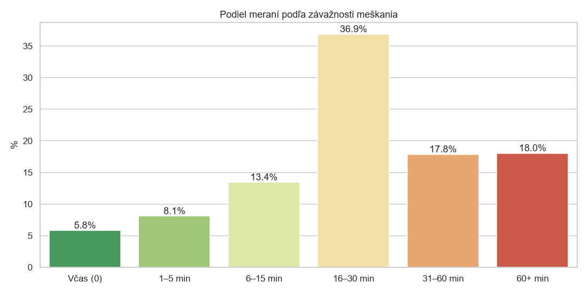
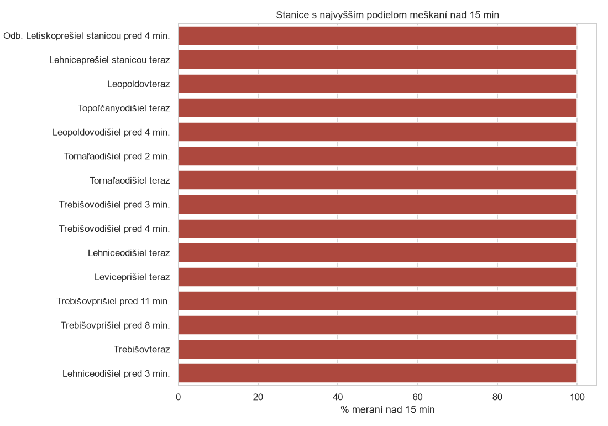

📈 Historický vývoj (denný, 7- a 30-dňový priemer, trend)

Obdobie dát: 23.10.2026 08:57 – 20.11.2026 00:48


| Zaznamov | Priemer | Median | P90 | Max | Std | Meskaju_pct | Nad5_pct | Nad15_pct | Nad60_pct | |
|---|---|---|---|---|---|---|---|---|---|---|
| Mesiac | ||||||||||
| 2026-10 | 17260 | 66.60 | 20.00 | 120.00 | 2176 | 193.21 | 96.23 | 85.27 | 67.36 | 13.24 |
| 2026-11 | 64789 | 99.77 | 23.00 | 148.00 | 2779 | 269.15 | 93.23 | 84.93 | 72.41 | 19.78 |


| Zaznamov | Priemer | Median | P90 | Max | Std | Meskaju_pct | Nad5_pct | Nad15_pct | Nad60_pct | |
|---|---|---|---|---|---|---|---|---|---|---|
| Den | ||||||||||
| Pondelok | 10649 | 73.47 | 21.00 | 128.00 | 1374 | 200.28 | 91.26 | 78.77 | 67.78 | 14.93 |
| Utorok | 16657 | 96.72 | 23.00 | 177.00 | 2085 | 241.88 | 95.16 | 86.56 | 75.22 | 17.29 |
| Streda | 13187 | 133.82 | 24.00 | 154.00 | 2779 | 362.61 | 93.82 | 85.02 | 71.92 | 26.08 |
| Štvrtok | 12450 | 78.32 | 24.00 | 132.00 | 1707 | 197.55 | 93.38 | 88.10 | 76.69 | 20.68 |
| Piatok | 10854 | 95.18 | 22.00 | 143.00 | 2545 | 266.58 | 97.34 | 89.15 | 72.58 | 16.56 |
| Sobota | 8723 | 89.58 | 20.00 | 148.00 | 2542 | 260.03 | 92.53 | 83.61 | 63.40 | 16.87 |
| Nedeľa | 9529 | 69.84 | 21.00 | 124.00 | 1491 | 187.85 | 92.45 | 81.74 | 66.63 | 14.11 |


| Zaznamov | Priemer | Median | P90 | Max | Std | Meskaju_pct | Nad5_pct | Nad15_pct | Nad60_pct | |
|---|---|---|---|---|---|---|---|---|---|---|
| Cast_dna | ||||||||||
| Noc (0–5) | 11955 | 201.51 | 21.00 | 1,089.20 | 2441 | 439.32 | 86.59 | 77.51 | 59.79 | 25.40 |
| Ranná špička (6–9) | 12434 | 55.10 | 21.00 | 78.00 | 2779 | 213.07 | 92.64 | 83.61 | 69.48 | 13.44 |
| Dopoludnie/popoludnie (10–15) | 24432 | 51.08 | 22.00 | 124.00 | 2542 | 136.60 | 95.33 | 86.07 | 73.53 | 15.32 |
| Popoludňajšia špička (16–19) | 17023 | 69.79 | 22.00 | 142.00 | 2096 | 165.71 | 95.56 | 85.84 | 74.34 | 17.38 |
| Večer (20–23) | 16205 | 128.55 | 24.00 | 485.20 | 2545 | 286.11 | 96.16 | 89.13 | 74.85 | 22.77 |




| Percentil | Minuty |
|---|---|
| P25 | 15.00 |
| P50 | 22.00 |
| P75 | 43.00 |
| P90 | 141.00 |
| P95 | 513.00 |
| P99 | 1,357.00 |
| P99.9 | 2,290.76 |
| Zaznamov | Podiel_% | |
|---|---|---|
| Kategoria | ||
| Včas (0) | 5037 | 6.14 |
| 1–5 min | 7267 | 8.86 |
| 6–15 min | 11208 | 13.66 |
| 16–30 min | 29870 | 36.41 |
| 31–60 min | 13569 | 16.54 |
| 60+ min | 15098 | 18.40 |


| Zaznamov | Priemer | Median | P90 | Max | Std | Meskaju_pct | Nad5_pct | Nad15_pct | Nad60_pct | |
|---|---|---|---|---|---|---|---|---|---|---|
| Stanica_Poloha | ||||||||||
| Barcapred 4 min. | 24 | 1,377.92 | 1,373.00 | 1,373.00 | 1491 | 24.09 | 100.00 | 100.00 | 100.00 | 100.00 |
| Barcapred 14 min. | 25 | 1,377.72 | 1,373.00 | 1,373.00 | 1491 | 23.60 | 100.00 | 100.00 | 100.00 | 100.00 |
| Barcapred 3 min. | 18 | 1,374.00 | 1,374.00 | 1,374.00 | 1374 | 0.00 | 100.00 | 100.00 | 100.00 | 100.00 |
| Barcapred 13 min. | 18 | 1,373.89 | 1,374.00 | 1,374.00 | 1374 | 0.47 | 100.00 | 100.00 | 100.00 | 100.00 |
| Bolerázteraz | 279 | 1,203.92 | 1,206.00 | 2,308.00 | 2776 | 803.49 | 100.00 | 100.00 | 99.28 | 89.96 |
| Štrbské Plesoteraz | 93 | 1,184.03 | 1,211.00 | 1,955.00 | 2172 | 577.94 | 100.00 | 100.00 | 100.00 | 100.00 |
| Kapušany pri Prešoveteraz | 330 | 1,109.39 | 1,109.50 | 1,967.50 | 2212 | 636.44 | 100.00 | 100.00 | 99.70 | 96.67 |
| Barcapred 6 min. | 5 | 1,062.80 | 1,097.00 | 1,371.60 | 1372 | 328.96 | 100.00 | 100.00 | 100.00 | 100.00 |
| Nižnáteraz | 105 | 1,012.72 | 990.00 | 1,892.60 | 2080 | 626.79 | 100.00 | 100.00 | 100.00 | 93.33 |
| Bratislava-Petržalkateraz | 390 | 901.92 | 627.00 | 2,186.50 | 2571 | 812.84 | 100.00 | 100.00 | 98.72 | 81.79 |
| Barcateraz | 3826 | 672.79 | 647.00 | 1,237.00 | 1485 | 409.42 | 100.00 | 100.00 | 99.71 | 91.48 |
| Turzovkateraz | 130 | 663.53 | 512.00 | 1,568.00 | 1817 | 574.91 | 100.00 | 100.00 | 99.23 | 83.08 |
| Trnavateraz | 201 | 616.42 | 293.00 | 1,723.00 | 2163 | 666.95 | 100.00 | 100.00 | 96.52 | 66.67 |
| Bratislava-Petržalkapred 12 min. | 5 | 533.00 | 17.00 | 1,562.20 | 2579 | 1,143.78 | 100.00 | 100.00 | 80.00 | 20.00 |
| Kútyteraz | 380 | 506.71 | 149.50 | 1,801.00 | 2540 | 702.65 | 100.00 | 100.00 | 90.53 | 55.53 |
| Trenčínteraz | 351 | 453.55 | 156.00 | 1,333.00 | 1953 | 534.39 | 100.00 | 100.00 | 99.43 | 64.67 |
| Dunajská Stredateraz | 61 | 419.34 | 390.00 | 870.00 | 990 | 322.38 | 100.00 | 100.00 | 98.36 | 75.41 |
| Podunajské Biskupiceteraz | 150 | 411.49 | 88.00 | 1,233.00 | 1562 | 493.85 | 100.00 | 100.00 | 99.33 | 50.00 |
| Bratislava-Petržalkapred 2 min. | 7 | 404.14 | 25.00 | 1,113.80 | 2579 | 960.00 | 100.00 | 100.00 | 85.71 | 28.57 |
| Košiceteraz | 858 | 356.84 | 133.00 | 1,082.00 | 1372 | 417.23 | 100.00 | 100.00 | 97.55 | 54.43 |
| Trenčínpred 10 min. | 7 | 306.71 | 31.00 | 805.80 | 1953 | 725.95 | 100.00 | 100.00 | 100.00 | 14.29 |
| Podunajské Biskupicepred 3 min. | 6 | 281.83 | 24.00 | 803.50 | 1569 | 630.63 | 100.00 | 100.00 | 100.00 | 16.67 |
| Nižná Myšľateraz | 53 | 261.87 | 153.00 | 697.80 | 851 | 240.25 | 100.00 | 100.00 | 100.00 | 73.58 |
| Skalica na Slovenskuteraz | 32 | 253.88 | 259.00 | 503.00 | 534 | 178.00 | 100.00 | 100.00 | 100.00 | 75.00 |
| Čaňateraz | 220 | 236.69 | 43.00 | 884.00 | 1343 | 364.20 | 100.00 | 100.00 | 99.55 | 37.27 |
| Zaznamov | Priemer | Median | P90 | Max | Std | Meskaju_pct | Nad5_pct | Nad15_pct | Nad60_pct | |
|---|---|---|---|---|---|---|---|---|---|---|
| Stanica_Poloha | ||||||||||
| 0 | 1039 | 0.00 | 0.00 | 0.00 | 0 | 0.00 | 0.00 | 0.00 | 0.00 | 0.00 |
| 1 | 1436 | 5.29 | 1.00 | 14.00 | 100 | 7.40 | 54.74 | 38.58 | 7.52 | 0.14 |
| Žilina | 61 | 7.02 | 0.00 | 24.00 | 61 | 12.23 | 47.54 | 31.15 | 18.03 | 1.64 |
| Výh. Ružín | 48 | 7.35 | 3.00 | 16.90 | 61 | 12.04 | 85.42 | 35.42 | 12.50 | 2.08 |
| 6 | 677 | 8.08 | 4.00 | 13.00 | 85 | 12.63 | 100.00 | 26.44 | 8.86 | 1.62 |
| 7 | 521 | 8.38 | 5.00 | 16.00 | 87 | 10.88 | 100.00 | 30.33 | 10.36 | 0.77 |
| 4 | 966 | 8.41 | 3.00 | 26.00 | 80 | 13.90 | 100.00 | 22.15 | 14.39 | 1.04 |
| 9 | 357 | 8.68 | 6.00 | 11.00 | 75 | 9.15 | 100.00 | 69.47 | 6.72 | 1.40 |
| 8 | 421 | 8.76 | 6.00 | 14.00 | 80 | 10.56 | 100.00 | 62.47 | 9.26 | 1.90 |
| 2 | 1271 | 8.80 | 1.00 | 25.00 | 66 | 11.11 | 99.92 | 36.82 | 27.07 | 0.08 |
| 5 | 796 | 8.95 | 3.00 | 31.00 | 71 | 14.18 | 100.00 | 21.23 | 14.45 | 1.01 |
| 3 | 1145 | 9.23 | 2.00 | 33.00 | 60 | 13.15 | 100.00 | 30.48 | 22.62 | 0.00 |
| Dubnica nad Váhom | 26 | 9.23 | 5.50 | 24.50 | 40 | 10.98 | 65.38 | 50.00 | 26.92 | 0.00 |
| Výh. Plevník-Drienové | 58 | 9.59 | 1.00 | 24.80 | 71 | 17.75 | 53.45 | 29.31 | 22.41 | 3.45 |
| 10 | 309 | 9.82 | 7.00 | 13.00 | 90 | 9.62 | 100.00 | 89.97 | 6.47 | 1.29 |

| Zaznamov | Priemer | Median | P90 | Max | Std | Meskaju_pct | Nad5_pct | Nad15_pct | Nad60_pct | |
|---|---|---|---|---|---|---|---|---|---|---|
| Vlak | ||||||||||
| REx 7781smer Bratislava-Petržalka | 131 | 1,213.52 | 1,236.00 | 2,306.00 | 2545 | 803.56 | 100.00 | 100.00 | 98.47 | 87.79 |
| Os 8102smer Štrbské Pleso | 94 | 1,194.59 | 1,216.00 | 1,964.70 | 2176 | 583.86 | 100.00 | 100.00 | 100.00 | 100.00 |
| Os 9217smer Bardejov | 113 | 1,136.29 | 1,122.00 | 2,050.00 | 2217 | 654.63 | 100.00 | 100.00 | 100.00 | 96.46 |
| Os 9108smer Prešov | 106 | 1,091.77 | 1,102.00 | 1,942.00 | 2162 | 615.23 | 100.00 | 100.00 | 100.00 | 97.17 |
| REx 7720smer Bratislava-Petržalka št. - Wien Hauptbahnhof (in Wbf | 176 | 1,066.15 | 876.00 | 2,296.00 | 2579 | 805.62 | 100.00 | 100.00 | 100.00 | 93.18 |
| Os 9209smer Bardejov | 123 | 1,056.17 | 1,012.00 | 2,028.00 | 2217 | 682.98 | 100.00 | 100.00 | 99.19 | 97.56 |
| Os 7923smer Trstená | 108 | 1,004.12 | 985.00 | 1,923.70 | 2085 | 641.28 | 100.00 | 100.00 | 98.15 | 91.67 |
| Os 2652smer Senica | 208 | 931.99 | 691.00 | 2,329.00 | 2779 | 918.75 | 100.00 | 100.00 | 94.71 | 65.38 |
| Os 4010smer Makov | 92 | 892.73 | 882.00 | 1,606.00 | 1817 | 533.50 | 100.00 | 100.00 | 100.00 | 93.48 |
| Os 2616smer Kúty | 194 | 856.48 | 625.00 | 2,177.00 | 2542 | 848.39 | 100.00 | 100.00 | 97.94 | 63.92 |
| Os 2624smer Kúty | 192 | 784.31 | 511.00 | 2,065.00 | 2428 | 806.01 | 100.00 | 100.00 | 100.00 | 60.94 |
| Os 5315smer Trenčín | 207 | 722.67 | 643.00 | 1,577.00 | 1953 | 573.33 | 100.00 | 100.00 | 97.58 | 82.13 |
| EC 189 HORNÁDsmer Čaňa št. hr. - Budapest-Keleti | 1480 | 699.82 | 727.00 | 1,257.00 | 1378 | 412.67 | 100.00 | 100.00 | 99.93 | 92.77 |
| EC 191 HORNÁDsmer Čaňa št. hr. - Budapest-Keleti | 1448 | 694.84 | 657.00 | 1,256.30 | 1378 | 410.78 | 100.00 | 100.00 | 100.00 | 92.89 |
| EC 193 HORNÁDsmer Čaňa št. hr. - Budapest-Keleti | 1401 | 691.23 | 652.00 | 1,257.00 | 1491 | 417.82 | 100.00 | 100.00 | 99.93 | 92.72 |
| Os 2627smer Trnava | 191 | 617.75 | 253.00 | 1,803.00 | 2167 | 705.06 | 100.00 | 100.00 | 94.76 | 53.93 |
| Os 4348smer Bratislava hlavná stanica | 119 | 545.71 | 392.00 | 1,344.00 | 1569 | 516.03 | 100.00 | 100.00 | 100.00 | 68.91 |
| Os 4370smer Dunajská Streda | 50 | 505.00 | 505.00 | 881.00 | 990 | 292.76 | 100.00 | 100.00 | 100.00 | 92.00 |
| Ex 13001smer Kúty št. hr. - Praha-Holešovice | 23 | 486.61 | 497.00 | 501.80 | 507 | 29.35 | 100.00 | 100.00 | 100.00 | 100.00 |
| EC 186 HORNÁDsmer Košice | 125 | 393.65 | 133.00 | 1,109.00 | 1344 | 435.19 | 100.00 | 100.00 | 99.20 | 56.80 |
| Zaznamov | Priemer | Median | P90 | Max | Std | Meskaju_pct | Nad5_pct | Nad15_pct | Nad60_pct | |
|---|---|---|---|---|---|---|---|---|---|---|
| Vlak | ||||||||||
| mešká 30-59 minút | 3095 | 3.55 | 2.00 | 9.00 | 53 | 4.56 | 77.61 | 18.19 | 2.97 | 0.00 |
| mešká 60 a viac minút | 3095 | 7.83 | 3.00 | 28.00 | 100 | 13.98 | 78.09 | 27.43 | 13.54 | 1.20 |
| Ex 618 TATRAN | 3106 | 13.65 | 5.00 | 36.00 | 79 | 18.54 | 77.33 | 48.33 | 26.24 | 4.54 |
| Ex 610 TATRAN | 3106 | 15.74 | 8.00 | 40.00 | 85 | 20.58 | 75.72 | 57.57 | 35.38 | 8.89 |
| Ex 620 TATRAN | 3106 | 16.49 | 7.00 | 30.00 | 141 | 29.25 | 72.83 | 58.76 | 23.44 | 8.11 |
| Ex 614 TATRAN | 3106 | 14.89 | 10.00 | 38.00 | 86 | 19.31 | 71.73 | 60.46 | 30.62 | 4.89 |
| mešká 15-29 minút | 3095 | 8.65 | 8.00 | 15.00 | 66 | 6.77 | 95.96 | 67.30 | 8.95 | 0.03 |
| Ex 621 TATRAN | 3106 | 21.51 | 16.00 | 50.00 | 83 | 20.05 | 94.62 | 73.86 | 50.90 | 8.63 |
| mešká 5-14 minút | 3095 | 18.29 | 19.00 | 27.00 | 57 | 7.42 | 96.70 | 94.35 | 67.59 | 0.00 |
| mešká do 5 minút | 3095 | 59.47 | 63.00 | 79.00 | 93 | 19.59 | 97.03 | 96.93 | 93.57 | 59.26 |
| Os 14280 NADsmer Brodské | 9 | 15.00 | 15.00 | 15.00 | 15 | 0.00 | 100.00 | 100.00 | 0.00 | 0.00 |
| Os 2706smer Vrbovce št. hr. - Velká nad Veličkou | 6 | 15.00 | 15.00 | 15.00 | 15 | 0.00 | 100.00 | 100.00 | 0.00 | 0.00 |
| Os 2722smer Vrbovce št. hr. - Velká nad Veličkou | 17 | 15.00 | 15.00 | 15.00 | 15 | 0.00 | 100.00 | 100.00 | 0.00 | 0.00 |
| Os 5113smer Nové Zámky | 11 | 15.18 | 15.00 | 16.00 | 16 | 0.40 | 100.00 | 100.00 | 18.18 | 0.00 |
| Os 3027smer Trnava | 5 | 15.20 | 15.00 | 15.60 | 16 | 0.45 | 100.00 | 100.00 | 20.00 | 0.00 |

| Zaznamov | Priemer | Median | P90 | Max | Std | Meskaju_pct | Nad5_pct | Nad15_pct | Nad60_pct | |
|---|---|---|---|---|---|---|---|---|---|---|
| Typ_vlaku | ||||||||||
| EC | 6183 | 507.28 | 397.00 | 1,227.00 | 1491 | 457.38 | 100.00 | 100.00 | 98.22 | 69.51 |
| REX | 3608 | 140.90 | 26.00 | 260.30 | 2579 | 388.89 | 100.00 | 100.00 | 92.52 | 19.51 |
| OS | 20321 | 112.04 | 23.00 | 150.00 | 2779 | 322.49 | 100.00 | 100.00 | 90.81 | 15.35 |
| RJ | 2299 | 62.03 | 29.00 | 144.00 | 1253 | 110.45 | 100.00 | 100.00 | 95.08 | 17.83 |
| EN | 727 | 58.98 | 25.00 | 136.40 | 486 | 89.69 | 100.00 | 100.00 | 92.85 | 16.51 |
| R | 6878 | 51.51 | 28.00 | 133.00 | 873 | 67.94 | 100.00 | 100.00 | 94.05 | 15.18 |
| RA | 1710 | 49.89 | 29.00 | 137.10 | 259 | 54.20 | 100.00 | 100.00 | 93.27 | 15.85 |
| SC | 481 | 41.04 | 22.00 | 53.00 | 257 | 55.13 | 100.00 | 100.00 | 92.31 | 8.52 |
| EX | 24085 | 30.61 | 17.00 | 78.00 | 507 | 43.23 | 86.10 | 74.08 | 55.03 | 13.36 |
| ZR | 282 | 25.01 | 23.00 | 36.00 | 54 | 8.39 | 100.00 | 100.00 | 96.81 | 0.00 |
| MEŠKÁ | 15475 | 19.56 | 9.00 | 63.00 | 100 | 23.70 | 89.08 | 60.84 | 37.32 | 12.10 |
| Timestamp | Vlak | Stanica_Poloha | Meskanie_Text | Meskanie_Minuty |
|---|---|---|---|---|
| 2026-11-18 09:17 | Os 2652smer Senica | Bolerázpred 7 min. | + 1399 minút= 23 hod, 19 min. | 2779 |
| 2026-11-18 09:07 | Os 2652smer Senica | Bolerázteraz | + 1396 minút= 23 hod, 16 min. | 2776 |
| 2026-11-18 08:58 | Os 2652smer Senica | Bolerázteraz | + 1386 minút= 23 hod, 6 min. | 2766 |
| 2026-11-18 08:47 | Os 2652smer Senica | Bolerázteraz | + 1376 minút= 22 hod, 56 min. | 2696 |
| 2026-11-18 08:37 | Os 2652smer Senica | Bolerázteraz | + 1366 minút= 22 hod, 46 min. | 2686 |
| 2026-11-18 08:27 | Os 2652smer Senica | Bolerázteraz | + 1356 minút= 22 hod, 36 min. | 2676 |
| 2026-11-18 08:07 | Os 2652smer Senica | Bolerázteraz | + 1336 minút= 22 hod, 16 min. | 2656 |
| 2026-11-18 07:57 | Os 2652smer Senica | Bolerázteraz | + 1326 minút= 22 hod, 6 min. | 2646 |
| 2026-11-04 07:17 | REx 7720smer Bratislava-Petržalka št. - Wien Hauptbahnhof (in Wbf | Bratislava-Petržalkapred 2 min. | + 1319 minút= 21 hod, 59 min. | 2579 |
| 2026-11-04 07:27 | REx 7720smer Bratislava-Petržalka št. - Wien Hauptbahnhof (in Wbf | Bratislava-Petržalkapred 12 min. | + 1319 minút= 21 hod, 59 min. | 2579 |
| 2026-11-18 07:47 | Os 2652smer Senica | Bolerázteraz | + 1316 minút= 21 hod, 56 min. | 2576 |
| 2026-11-04 07:07 | REx 7720smer Bratislava-Petržalka št. - Wien Hauptbahnhof (in Wbf | Bratislava-Petržalkateraz | + 1311 minút= 21 hod, 51 min. | 2571 |
| 2026-11-18 07:37 | Os 2652smer Senica | Bolerázteraz | + 1306 minút= 21 hod, 46 min. | 2566 |
| 2026-11-04 06:57 | REx 7720smer Bratislava-Petržalka št. - Wien Hauptbahnhof (in Wbf | Bratislava-Petržalkateraz | + 1301 minút= 21 hod, 41 min. | 2561 |
| 2026-11-18 07:27 | Os 2652smer Senica | Bolerázteraz | + 1296 minút= 21 hod, 36 min. | 2556 |


statistiky/ (CSV)